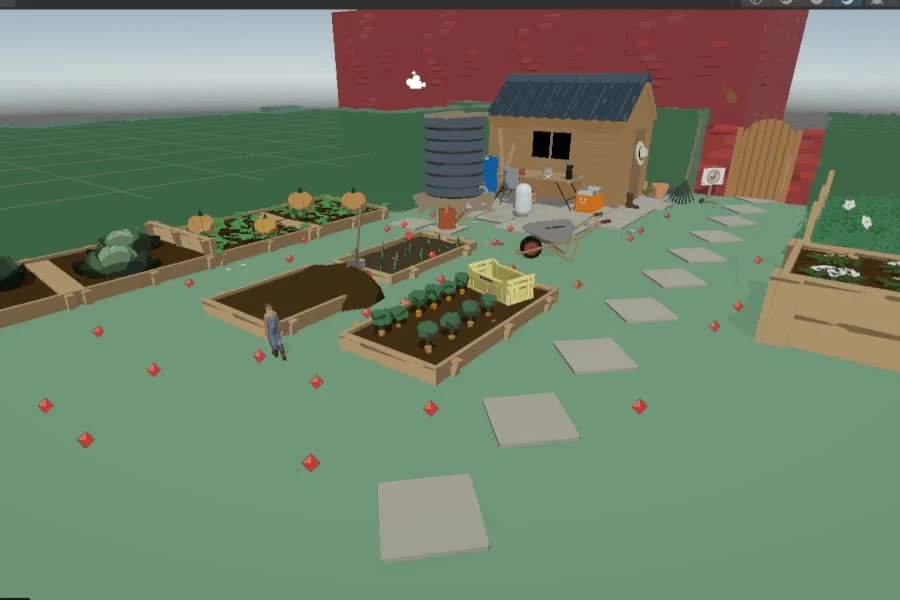

Projectarchief
Stealthpuzzel
Vertical Slice: Untitled Goose.
Een nagemaakt deel van Untitled Goose Game waarin je als gans allerlei streken uithaalt bij een boer. Je probeert hem te plagen zonder gepakt te worden.
Ontwikkeling
Over het project.
Samen met game artists en programmeurs maakte ik voor school een vertical slice van Untitled Goose Game. Ik leidde het programmeerwerk. De speler verplaatst als gans voorwerpen en probeert uit de buurt van de boer te blijven.
Projectbeeld

Mijn bijdrage.
Ik liet de boer een route door de tuin volgen. Bij bepaalde punten stopt hij om te harken of te graven. Animatie en taak wisselen met hem mee.
Bekijk de mechanics